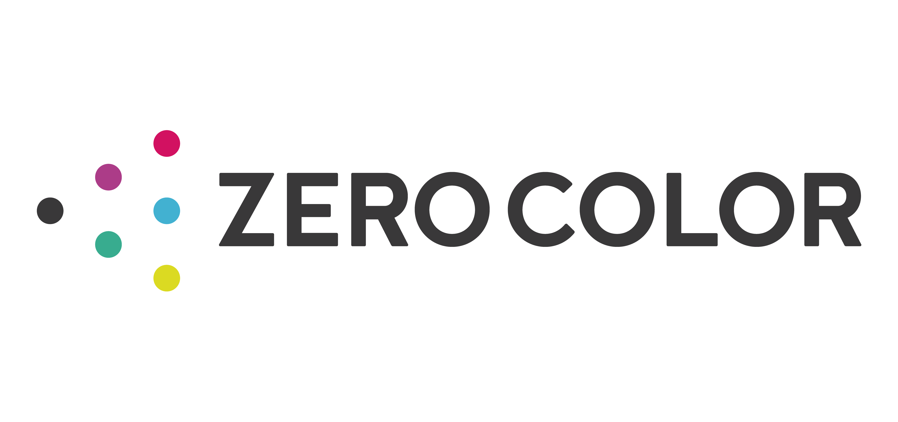

ZERO
COLOR LOGO
コーポレートロゴデザイン

overview
スタートアップのロゴデザイン
就活支援・留学紹介事業を営む株式会社ZERO COLORのロゴデザインを担当。
ZERO COLORという名前に込められた「ユーザはみんなゼロの状態。この会社と関わることでゼロからいろんな色になって欲しい」という想いを、無彩色の点がゼロカラと関わることで様々な色（＝個性）を見出していく様子で表現。
process
1.クライアントからのヒアリング
ロゴ作成のプロジェクトを開始するにあたり、クライアントから会社名に込められた想い、事業内容やターゲットユーザ、今後の会社の方向性、ロゴに対する要望などをヒアリングした。
process
2.アイデアの幅を広げて提案
クライアントの求める方向性を探るため、様々な方向性のロゴ案を作成し、まとめて共有して、アウトプットを見ながらコミュニケーションを行なった。 結果として、最もクライアントに響いた「type-dot」をブラッシュアップすることとなった。

process
3.方向性を絞ってブラッシュアップ
絞られた方向性に沿ってマイナーチェンジとブラッシュアップを行った。 完成した際にロゴが使用されるイメージを掴んでもらうため、名刺のイメージや既にあったwebサイトへのはめ込みイメージ、競合サービスとの比較表を制作した。 結果として、マイナーチェンジはせず2.で選ばれたものをそのまま最終調整していく方向で落ち着いた。
process
4.最終調整
ロゴの完成度を底上げするため、最終調整を行なった。具体的には、ゼロを意味する無彩色の点を基準とし、ロゴタイプの中心や各円の大きさや距離などを調整した。また、アイソレーションゾーンを規定することで最低限のガイドラインを作成した。